<?xml version="1.0" encoding="utf-8"?>
<!DOCTYPE html PUBLIC "-//W3C//DTD XHTML 1.0 Strict//EN"
 "http://www.w3.org/TR/xhtml1/DTD/xhtml1-strict.dtd">
<html xmlns="http://www.w3.org/1999/xhtml">
<head>
  <meta http-equiv="Content-Type" content="text/html; charset=utf-8" />
  <meta http-equiv="Content-Style-Type" content="text/css" />
  <meta name="generator" content="pandoc" />
  <meta name="author" content="John McCrae" />
  <title>Ontology-lexica with lemon</title>
  <style type="text/css">code{white-space: pre;}</style>
  <link rel="stylesheet" type="text/css" media="screen, projection, print"
    href="http://www.w3.org/Talks/Tools/Slidy2/styles/slidy.css" />
  <script type="text/x-mathjax-config">
    MathJax.Hub.Config({tex2jax: {inlineMath: [['$','$'], ['\\(','\\)']]}});
  </script>
  <script type="text/javascript"
    src="http://cdn.mathjax.org/mathjax/latest/MathJax.js?config=TeX-AMS-MML_HTMLorMML">
  </script>
  <style>
    @media screen {
      div.slide h1:not(.title) { 
            font-weight: bold;
            padding-left: 17%;
            margin-top: 1.2%;
            padding-bottom: 2%;
            margin-bottom: 4%;
            color: #222;
            border-bottom: 5px solid #fc0;
        }
  
        div.titlepage h1 {
            margin-top:10%;
        }
      }
  
        ul li {
            list-style-image: url('bullet.gif');
        }
  div.vbox {
    float: left;
    height: 40%;
    width: 50%;
    margin-top: -240px;
  }
  div.hbox {
    width:60%;
    margin-top: 0;
    margin-left:auto;
    margin-right:auto;
    border:1px solid silver;
    background:#F0F0F0;
    overflow:auto;
    text-align:left;
    clear:both;
  }
  div.shbox {
    width:30%;
    margin-top: 0;
    margin-left:auto;
    margin-right:auto;
    border:1px solid silver;
    background:#F0F0F0;
    overflow:auto;
    text-align:left;
    clear:both;
  }
  
  
  div.hbox img {
      width:100%;
  }
  div.shbox img {
      width:100%;
  }
  
  .leftcol { float:left;max-width:50%; }
  .rightcol { float:right;max-width:48%; }
  .rightcol img { padding-top:50px;padding-right:200px; }
  
  </style>
  <meta name="copyright" content="Linked Data for Language Technologies - Tutorial at LREC-2014">
  <script type="text/javascript">
  window.onload = function() {
  var background_slide = document.createElement("div");
  background_slide.setAttribute("class","background");
  var background_img = document.createElement("img");
  background_img.setAttribute("src","img/lider.png");
  background_img.setAttribute("style","position:absolute;left:20;top:20;width:300px;");
  background_slide.appendChild(background_img);
  document.body.appendChild(background_slide);
  
  }
  </script>
  <script src="http://www.w3.org/Talks/Tools/Slidy2/scripts/slidy.js.gz"
    charset="utf-8" type="text/javascript"></script>
</head>
<body>
<div class="slide titlepage">
  <h1 class="title">Ontology-lexica with <em>lemon</em></h1>
  <p class="author">
John M<sup>c</sup>Crae
  </p>
  <p class="date">Semantic Computing Group, University of Bielefeld</p>
</div>
<div id="problem" class="slide section level1">
<h1>Problem</h1>
<ul>
<li>Ontologies have become popular.</li>
<li>Use several formalisms: RDFS, OWL, F-Logic, etc.</li>
<li>Ontologies do not have much linguistic information.</li>
</ul>
<pre>
:Cat a owl:Class ;
  rdfs:label "cat"@eng ;
  rdfs:label "Katze"@deu .
</pre>

<ul>
<li>What is the plural? Easy for English, not for German</li>
</ul>
</div>
<div id="ontologies" class="slide section level1">
<h1>Ontologies</h1>
<div>
    
Take a word:
</div>
<div style="position:relative;left:300px;padding:30px;">    
<em>“edema”</em>
</div>
<div>
    
And it means something, so we put it in an ontology and give it an identifier (URI):
</div>
<div style="position:relative;left:150px;padding:30px;">
<code>http://dbpedia.org/resource/Edema</code>
</div>
<div style="position:relative;left:500px;padding:30px;">
<code>http://de.dbpedia.org/resource/\Ödem</code>
</div>
<div>
    
In fact it (already) has lots of identifiers linked on the web
</div>
<div style="position:relative;left:50px;padding:30px;">    
<span style="padding:30px;"> <code>mesh:D004487</code> </span> <span style="padding:30px;"> <code>icd10:R60.9</code> </span> <span style="padding:30px;"> <code>umls:C0013604</code> </span>
</div>

</div>
<div id="ontologies-1" class="slide section level1">
<h1>Ontologies</h1>
<div class="leftcol">
<ul>
<li>We can describe the entity with </li>
<li>Relationships to entities in other ontologies</li>
<li>Use reasoning to infer equivalence</li>
<li>All done with the “Web Ontology Language” (OWL)</li>
<li>Published by W3C in 2002; version 2 in 2008
</div>
<div class="rightcol">

</div>
</li>
</ul>
</div>
<div id="ontology-labels" class="slide section level1">
<h1>Ontology labels</h1>
<div>    
Concepts may be identified by many words
</div>
<div style="padding:30px;">
<span style="padding:30px;"> <em>“edema”</em> </span> <span style="padding:30px;"> <em>“edemata”</em> </span> <span style="padding:30px;"> <em>“dropsy”</em> </span>
</div>
<div>
<ul>
<li>These are all labels for the same ontology concept</li>
<li>No differentiation</li>
<li>Cannot say which are plural, which not
</div>
</li>
</ul>
</div>
<div id="inflection-and-synonyms" class="slide section level1">
<h1>Inflection and Synonyms</h1>
<div>
    
We could introduce an element for each word:
</div>
<div class="hbox">
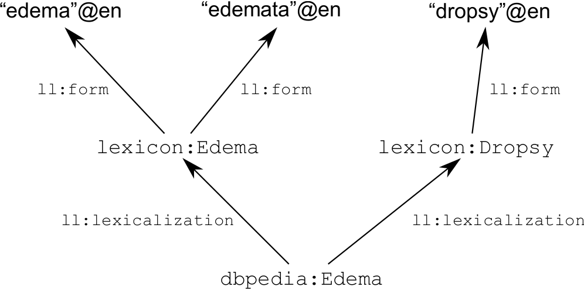
</div>

</div>
<div id="skos-xl" class="slide section level1">
<h1>SKOS-XL</h1>
<ul>
<li>Similar to SKOS-XL
<ul>
<li>eXtended Labels for the Simple Knowledge Organization System</li>
<li>W3C Recommendation since 2009</li>
</ul></li>
<li>SKOS-XL does not allow multiple forms of the same label
<ul>
<li>No grouping of “edema” and “edemata”</li>
</ul></li>
<li>“We [TopQuadrant] have yet to hear a use case that cannot be supported by SKOS alone” (<a href="http://topquadrantblog.blogspot.de/2012/07/who-needs-skos-xl-maybe-no-one.html" class="cite">Who need SKOS-XL? Maybe no-one. (Polikoff, 2013)</a>)</li>
</ul>
</div>
<div id="forms" class="slide section level1">
<h1>Forms</h1>
<div>
But such a distinction is only useful if we can say why:
</div>
<div style="padding:30px;position:relative;left:100px;">
<span style="padding:30px;"> <em>“edema”</em> (<strong>singular</strong>) </span> <span style="padding:30px;"> <em>“edemata”</em> (<strong>plural</strong>) </span>
</div>
<div>
Hence, forms are also nodes:
</div>
<div class="hbox">

</div>


</div>
<div id="senses" class="slide section level1">
<h1>Senses</h1>
<div>
Sometimes we wish to say something about why a particular word is used
</div>
<div style="padding:30px;position:relative;left:100px;">
<span style="padding:30px;"> <em>“edema”</em> (<strong>modern</strong>) </span> <span style="padding:30px;"> <em>“dropsy”</em> (<strong>antiquated</strong>) </span>
</div>
<div>
Hence we introduce a sense to describe the usage of a word with a given meaning
</div>
<div class="hbox">

</div>

</div>
<div id="the-core-of-lemon" class="slide section level1">
<h1>The core of <em>lemon</em></h1>
<div class="hbox">

</div>

</div>
<div id="so...-what-is-a-ontology-lexicon" class="slide section level1">
<h1>So..., what is a (ontology-)lexicon?</h1>
<ul>
<li>A lexicon is a collection of lexical information</li>
<li>We do not need to define semantics within the lexicon</li>
<li>“An ontology-based semantic lexicon would leave the semantics to the ontology, focusing instead on providing domain-specific terms and object descriptions in the ontology.” (Buitelaar, 2010)</li>
</ul>
</div>
<div id="dictionaries-as-lexica" class="slide section level1">
<h1>Dictionaries as lexica</h1>
<ul>
<li>In fact, a lexicon represents much of the information already found in a dictionary</li>
<li>That is words, their forms and their meaning</li>
<li>Must be machine-readable</li>
<li>Take Wiktionary as an example</li>
</ul>
</div>
<div id="wiktionary-as-a-lexicon" class="slide section level1">
<h1>Wiktionary as a lexicon</h1>
<div class="figure">
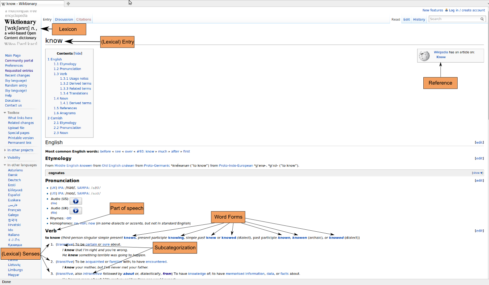<p class="caption">A Wiktionary entry</p>
</div>
</div>
<div id="wiktionary-as-a-lexicon-1" class="slide section level1">
<h1>Wiktionary as a lexicon</h1>
<div class="figure">
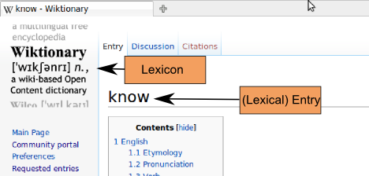
</div>
</div>
<div id="wiktionary-as-a-lexicon-2" class="slide section level1">
<h1>Wiktionary as a lexicon</h1>
<div class="figure">
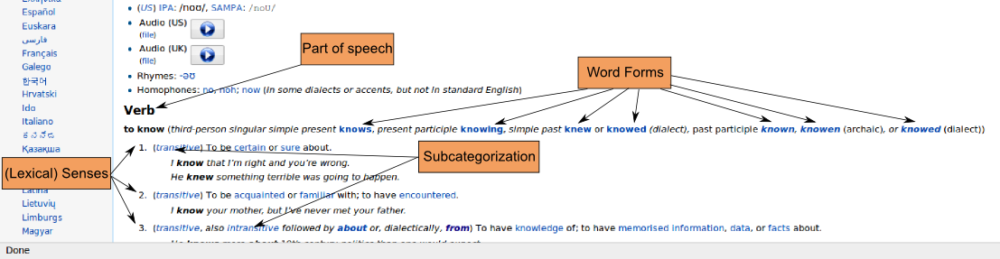
</div>
</div>
<div id="wiktionary-as-a-lexicon-3" class="slide section level1">
<h1>Wiktionary as a lexicon</h1>
<div class="figure">

</div>
</div>
<div id="lemons-origins" class="slide section level1">
<h1><em>lemon</em>'s origins</h1>
<div class="leftcol">
<ul>
<li>Lexical Markup Framework (ISO 24613)
<ul>
<li>Standard for representing lexicons</li>
<li>XML</li>
</ul></li>
<li>LexInfo, LIR
<ul>
<li>Represent lexical information relative to an ontology</li>
<li>OWL</li>
</ul></li>
<li>SKOS (W3C Standard)
<ul>
<li>Designed for Taxonomy/Vocabulary representation</li>
<li>RDF
</div>
<div class="rightcol">
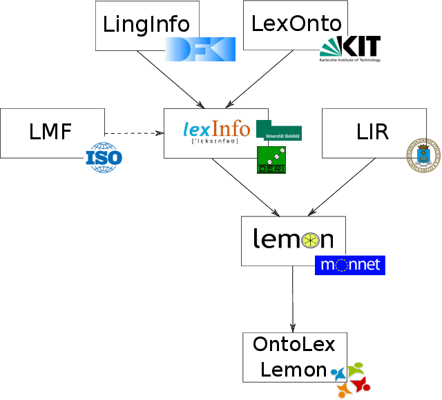
</div>      
</li>
</ul></li>
</ul>
</div>
<div id="design-goals" class="slide section level1">
<h1>Design goals</h1>
<ul>
<li>RDF(S)</li>
<li>Conciseness</li>
<li>Not prescriptive
<ul>
<li>i.e., uses data categories</li>
</ul></li>
<li>Semantics by reference
<ul>
<li>i.e., uses ontologies</li>
</ul></li>
<li>Extensible</li>
</ul>
</div>
<div id="why-lemon-rdfs" class="slide section level1">
<h1>Why <em>lemon</em>: RDF(S)</h1>
<div class="leftcol">
<ul>
<li>RDF models are labelled directed graphs
<ul>
<li>Allows for smarter representation</li>
</ul></li>
<li>Each entry has a URI
<ul>
<li>Queriable on the web using standards</li>
<li>Clear responsibility for data</li>
</ul></li>
<li>Linking possible between different lexica
<ul>
<li>Reuse of lexicon data</li>
</ul></li>
<li>Some induction possible (subproperties, classes etc.)
</div>
<div class="rightcol">

</div>
</li>
</ul>
</div>
<div id="why-lemon-conciseness" class="slide section level1">
<h1>Why <em>lemon</em>: Conciseness</h1>
<div class="leftcol">
<ul>
<li>Small models (i.e., fewer links, fewer kB)</li>
<li>Easier to understand</li>
<li>&quot;Open-world&quot;: Not necessary to state all facts
<ul>
<li>Multiple points of view
</div>
<div class="rightcol">

</div>
</li>
</ul></li>
</ul>
</div>
<div id="why-lemon-semantics-by-reference" class="slide section level1">
<h1>Why <em>lemon</em>: Semantics by Reference</h1>
<div class="leftcol">
<ul>
<li>Meaning of a word given by reference</li>
<li>Reference (generally an ontology) capable of representing more complex semantic information</li>
<li>Disambiguation is performed relative to the ontology</li>
<li>No (traditional) word senses
<ul>
<li>No clashing of word senses in cross-lingual mappings
</div>
<div class="rightcol">
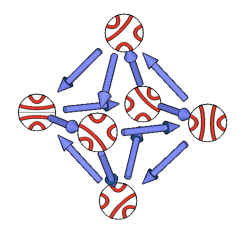
</div>
</li>
</ul></li>
</ul>
</div>
<div id="why-lemon-modular-and-extensible" class="slide section level1">
<h1>Why <em>lemon</em>: Modular and extensible</h1>
<div class="leftcol">
<ul>
<li>RDF(S) extensibility allows representation of
<ul>
<li>Subtle differences</li>
<li>Unexpected data categories</li>
</ul></li>
<li>Modularity
<ul>
<li>Different modules for different user requirements</li>
<li>New modules can be added later without affecting core
</div>
<div class="rightcol">
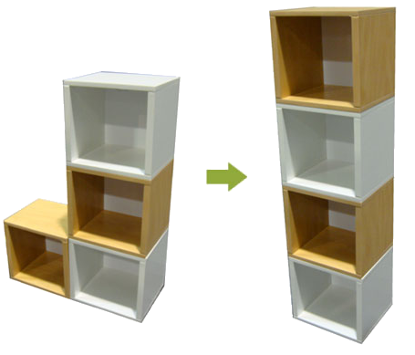
</div>

</li>
</ul></li>
</ul>
</div>
<div id="modules" class="slide section level1">
<h1>Modules</h1>
<div class="shbox">
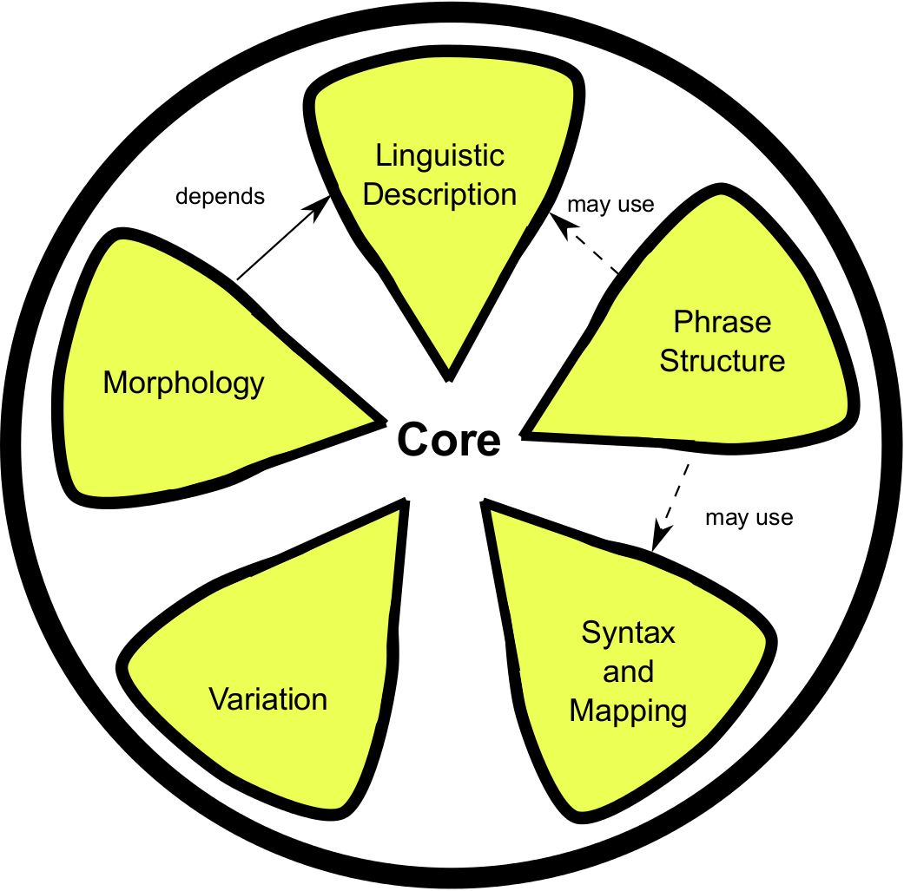
</div>


</div>
<div id="grammatical-description" class="slide section level1">
<h1>Grammatical Description</h1>
<div class="leftcol">
<p>We can annotate a lexical entry by adding propeties, e.g.,</p>
<pre>
ex:Katze lexinfo:partOfSpeech lexinfo:noun ;
  lexinfo:gender lexinfo:feminine .

lexinfo:feminine dcr:datcat
  <http://isocat.org/datcat/DC-247> .

lexinfo:noun dcr:datcat
  <http://isocat.org/datcat/DC-1333> .
</pre>
</div>
<div class="rightcol">
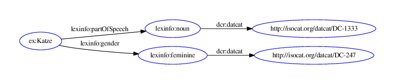
</div>


</div>
<div id="grammatical-decomposition" class="slide section level1">
<h1>Grammatical Decomposition</h1>
<pre>
ex:SwineFlu lemon:sense ex:SwineFlu_Sense ;
  lexinfo:head ex:Flu .
ex:Flu lemon:sense ex:Flu_Sense .
ex:SwineFlu_Sense lemon:reference dbpedia:Swine_influenza .
ex:Flu_Sense lemon:reference dbpedia:Influenza .

dbpedia:Influenza dct:subject category:Influenza .
dbpedia:Swine_influenza dct:subject category:Influenza .
</pre>

<div class="figure">
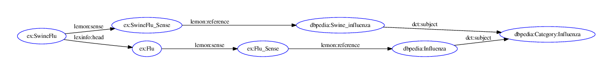
</div>
<!--%\frame{
%# Decomposition}
%   \begin{itemize}
%   *  Entries marked as \textit{Word},\textit{Phrase} or \textit{Part} (of word)
%   *  Decomposed into sub-entries 
%   \begin{itemize}
%       *  Phrase $\rightarrow$ Words
%       *  Word $\rightarrow$ Words and/or Parts
%   \end{itemize}
%   *  Implemented by RDF list
%   \begin{itemize}
%   *  Ordered
%   \end{itemize}
%   *  Components may be marked to show necessary form properties
%   \end{itemize}
%}
%
%\frame{
%   # Decomposition: example}
%   \begin{center}
%   \vspace{7mm}
%   \includegraphics[width=8cm]{img/description-ex3.png}
%   \end{center}
%}
%
%\frame{
%   # Properties}
%   \imageboxwider{
%   \begin{itemize}
%   *  Any element in the lexicon may have properties
%   *  All propeties are stated as subproperties of _lemon_'s \texttt{property}
%   *  _lemon_ does not have any such properties or values. A separate ontology is required
%   \begin{itemize}
%   *  e.g., ISOcat, GOLD, LexInfo
%   \end{itemize}
%   \end{itemize}
%   }{img/ISOcat_logo.png}
%}
%
%\begin{frame}[fragile]{Properties: example}
%\vspace{0.5cm}
%\begin{verbatim}
%@prefix isocat: <http://www.isocat.org/datcat/> .
%
%:katt a lemon:Word ;
%  lemon:canonicalForm [ 
%    lemon:writtenRep "katt"@swe ;
%    isocat:DC-251 isocat:DC-252 ] ; # number=singular
%  
%  lemon:otherForm [
%    lemon:writtenRep "katter"@swe ;
%    isocat:DC-251 isocat:DC-253 ] . # number=plural
%
%isocat:DC-251 rdfs:subPropertyOf lemon:property .
%\end{verbatim}
%\end{frame}
%
%\frame{
%# Variation}
%   \begin{itemize}
%   *  Forms, Entries and Senses may be marked as variants
%   *  Again, few _lemon_ properties, mostly use external ontology
%   *  Mark links as subproperties of \texttt{formVariant},\texttt{lexicalVariant}, \texttt{senseRelation}
%   *  Sense Relation does have subproperties \texttt{equivalent}, \texttt{broader}, \texttt{narrower},
%   \texttt{incompatible}
%   *  Sense Relation can be used to model \texttt{translationOf}
%   \end{itemize}
%}
%
%\frame{
%# Variation: example}
%   \begin{center}
%   \vspace{7mm}
%   \includegraphics[width=8cm]{img/variation-ex2.png}
%   \end{center}
%}-->
    
</div>
<div id="frames-and-correspondence" class="slide section level1">
<h1>Frames and Correspondence</h1>
<ul>
<li>The verb “know” is always used in a sentence
<ul>
<li>“John knows Sebastian”</li>
</ul></li>
<li>Similarly <code>foaf:knows</code> is only used in a triple
<ul>
<li><code>&lt;http://john.mccr.ae/&gt; foaf:knows &lt;http://aksw.org/SebastianHellmann&gt;</code></li>
</ul></li>
<li>It is necessary to state how these corresponds</li>
</ul>
</div>
<div id="frames-and-correspondence-1" class="slide section level1">
<h1>Frames and Correspondence</h1>
<div class="leftcol">
<ul>
<li>Linguistically we define each word as having a <em>subcategorization frame</em>
<ul>
<li>e.g., “X knows Y”</li>
</ul></li>
<li>Each RDF property has two arguments
<ul>
<li><em>Subject</em></li>
<li><em>Object</em></li>
</ul></li>
<li>We need to state the correspondence of syntactic arguments and semantic arguments
</div>       
<div class="rightcol">
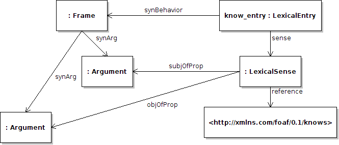
</div>
</li>
</ul>
</div>
<div id="ontolex-community-group" class="slide section level1">
<h1>OntoLex Community Group</h1>
<ul>
<li>W3C setup community groups as “an open forum, without fees, where Web developers and other stakeholders develop specifications”</li>
<li>OntoLex group was set up with the following goals
<ol style="list-style-type: decimal">
<li>Develop model for representation of lexica relative to ontologies</li>
<li>Demonstrate value of representing lexica on the Semantic Web</li>
<li>Best practices for data categories</li>
<li>Show improvement in NLP by means of ontology-lexica</li>
<li>Bring together people working on standards for linguistic information</li>
<li>Build interoperability between existing models</li>
</ol></li>
<li>Chaired by Philipp Cimiano (Uni Bielefeld) and Paul Buitelaar (DERI, Galway)</li>
<li>78 Participants across 50 institutes</li>
</ul>
</div>
<div id="ontolex-lemon" class="slide section level1">
<h1>OntoLex Lemon</h1>
<ul>
<li>New model using W3C namespace, but (mostly) backwards-compatible</li>
<li>Introduce new <code>Concept</code> class to describe non-ontological semantics (e.g., “synsets”)</li>
<li>Modules:
<ul>
<li>Syntax and Semantics</li>
<li>Decomposition</li>
<li>Variation and Translation</li>
<li>Metadata</li>
</ul></li>
</ul>
</div>
<div id="resources-using-lemon" class="slide section level1">
<h1>Resources using lemon</h1>
<ul>
<li>lemonUby (Darmstadt)
<ul>
<li>Existing resources, standardized to LMF, and interlinked</li>
<li>WordNet, FrameNet, VerbNet, OmegaWiki, Wiktionary</li>
<li>English, German</li>
</ul></li>
<li>wiktionary.dbepdia.org (Leipzig)
<ul>
<li>Conversion of Wiktionary to <em>lemon</em></li>
<li>Many languages</li>
</ul></li>
<li>PAROLE/SIMPLE Lexicon (Pompeu Fabra, Barcelona)
<ul>
<li>English, Spanish, Catalan</li>
</ul></li>
<li>DBNary (Grenoble)
<ul>
<li>Conversion of Wiktionary to LMF and <em>lemon</em></li>
<li>French, English and German.</li>
</ul></li>
</ul>
</div>
<div id="applications-of-lemon" class="slide section level1">
<h1>Applications of lemon</h1>
<ul>
<li>Ontology-based information extraction</li>
<li>Ontology localization</li>
<li>Natural language generation</li>
<li>Integration into NLP pipelines</li>
<li>Question answering</li>
</ul>
</div>
<div id="summary" class="slide section level1">
<h1>Summary</h1>
<ul>
<li><em>lemon</em> is a proposed model for the ontology-lexicon interface</li>
<li>Soon to be a W3C Vocabulary under the OntoLex CG</li>
<li>Concise, modular, extensible RDF(S) model</li>
<li>Yet, still linguistically sophisticated</li>
<li>Already in use</li>
</ul>
</div>
<div id="section" class="slide section level1">
<h1> </h1>
<div class="hbox" style="height:500px";>
<div style="font-size:300%;text-align:center;position:relative;top:40%;">
WordNet-RDF
</div>
</div>

</div>
<div id="what-is-wordnet" class="slide section level1">
<h1>What is WordNet?</h1>
<ul>
<li>WordNet is one of the oldest and most widely used lexico-semantic resources</li>
<li>Has been used for
<ul>
<li>Word sense disambiguation</li>
<li>Query expansion</li>
<li>Entity recognition</li>
<li>Event processing</li>
<li>Sentiment analysis</li>
<li>etc., etc.,</li>
</ul></li>
</ul>
</div>
<div id="wordnet-as-a-global-project" class="slide section level1">
<h1>WordNet as a global project</h1>
<div class="leftcol">
<ul>
<li>WordNets have been developed for over 70 languages</li>
<li>Has been extended by
<ul>
<li>FrameNet</li>
<li>VerbNet</li>
<li>OntoNotes</li>
<li>etc., etc.,</li>
</ul></li>
<li>It is difficult to link back to the original</li>
<li>More so as WordNet synsets are not stable cross-version!
<ul>
<li>Actually, it is not clear which synsets map
</div>
<div class="rightcol">

</div>
</li>
</ul></li>
</ul>
</div>
<div id="wordnet-rdf" class="slide section level1">
<h1>WordNet-RDF</h1>
<ul>
<li>WordNet needs RDF</li>
<li>To be a stable center of the LLOD cloud</li>
<li>To enable easy interversion linking</li>
<li>To integrate with the Semantic Web community</li>
</ul>
</div>
<div id="wait-hasnt-this-been-done-already" class="slide section level1">
<h1>Wait, hasn't this been done already?</h1>
<ul>
<li>Yes:
<ul>
<li>W3C WordNet</li>
<li>VU Wordnet 3.0</li>
<li>As part of UBY, BabelNet, etc.</li>
</ul></li>
<li>But:
<ul>
<li>Not involved with development of WordNet</li>
<li>Not hosted by data producer (Princeton)</li>
<li>Not updated with new releases</li>
</ul></li>
</ul>
</div>
<div id="lemon-and-wordnet" class="slide section level1">
<h1><em>lemon</em> and WordNet</h1>
<ul>
<li><em>lemon</em> as the W3C Model for lexica should be a natural choice</li>
<li>WordNet strongly influenced the development of the Lexical Markup Framework (LMF)</li>
<li>LMF strongly influenced <em>lemon</em></li>
<li>Thus, <em>lemon</em> fits closely to WordNet</li>
</ul>
</div>
<div id="wordnet-as-an-ontology" class="slide section level1">
<h1>WordNet as an ontology</h1>
<ul>
<li>But... <em>lemon</em> requires reference to an ontology</li>
<li>We treat the WordNet synset graph as the ontology</li>
<li>We do not assign the synsets OWL types
<ul>
<li>Instead they are <code>skos:Concept</code>s</li>
</ul></li>
</ul>
</div>
<div id="wordnet-stable-identifiers" class="slide section level1">
<h1>WordNet stable identifiers</h1>
<p>Synsets:</p>
<pre>
http://wordnet-rdf.princeton.edu/wn31/103547513-n
</pre>

<ul>
<li>Version: <code>wn31</code></li>
<li>Part-of-speech: <code>1********-n</code></li>
<li>Offset identifier: <code>03547513</code></li>
</ul>
<p>Words:</p>
<pre>
http://wordnet-rdf.princeton.edu/wn31/hotel-n
</pre>

<ul>
<li>Version: <code>wn31</code></li>
<li>Lemma: <code>hotel</code></li>
<li>Part-of-speech: <code>n</code></li>
</ul>
</div>
<div id="wordnet-data-example" class="slide section level1">
<h1>Wordnet data example</h1>
<div class="hbox">

</div>

</div>
<div id="external-data-linking" class="slide section level1">
<h1>External data linking</h1>
<ul>
<li>Open Multilingual Wordnet</li>
<li>lemonUBY</li>
<li>VerbNet</li>
<li>W3C WordNet</li>
</ul>
</div>
<div id="including-translations" class="slide section level1">
<h1>Including translations</h1>
<ul>
<li>There are three ways of including translations in <em>lemon</em>
<div class="hbox">

</div>
</li>
</ul>
</div>
<div id="including-translations-1" class="slide section level1">
<h1>Including translations</h1>
<ul>
<li>By Reference
<ul>
<li>Ontology-based semantics</li>
</ul></li>
<li>By Sense Relationship
<ul>
<li>Allows exact correspondence, e.g., &quot;NATO&quot;@en =&gt; &quot;OTAN&quot;@fr, &quot;North Atlantic Treaty Organization&quot;@en =&gt; &quot;Organisation du traité de l'Atlantique Nord&quot;@fr</li>
<li>Explicit links</li>
</ul></li>
<li>As datatype property
<ul>
<li>No further annotation</li>
<li>Easy to query</li>
</ul></li>
</ul>
</div>
<div id="links-to-other-resources" class="slide section level1">
<h1>Links to other resources</h1>
<ul>
<li>lemonUBY
<ul>
<li>To WordNet 3.0 data on lexical entries and synsets</li>
</ul></li>
<li>VerbNet
<ul>
<li>To frames on a sense level</li>
</ul></li>
<li>W3C WordNet
<ul>
<li>Links on a lexical entries and synsets</li>
</ul></li>
<li>Your data?</li>
</ul>
</div>
<div id="linking-to-previous-version" class="slide section level1">
<h1>Linking to previous version</h1>
<ul>
<li>URI schemes are also supported for previous version
<ul>
<li>Implemented by 303 redirect</li>
</ul></li>
</ul>
<p>e.g.,</p>
<div style="text-align:center;width:100%;">
<tt>http://wordnet-rdf.princeton.edu/wn30/03542333-n</tt>
</div>

<div style="text-align:center;width:100%;font-size:150%;padding:50px;">
⇓
</div>

<div style="text-align:center;width:100%;">
<tt>http://wordnet-rdf.princeton.edu/wn31/103547513-n</tt>
</div>

</div>
<div id="summary-1" class="slide section level1">
<h1>Summary</h1>
<ul>
<li>First Princeton WordNet version</li>
<li>Provides stable identifiers
<ul>
<li>i.e., will support the interlingual index</li>
</ul></li>
<li>Linked already to many resources</li>
<li>Includes extra data (e.g., translations) from other open licensed resources</li>
</ul>
</div>
</body>
</html>
